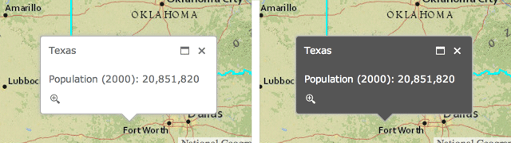

Agenda
- ArcGIS for Developers
- Resources
- Daves Top 5
- Scotts Top 5
ArcGIS for Developers
Your Content
- Downloads
- Hosted Data
- Registered Applications
- Usage Summary
OSS
- Replaces old forums
- Has enhanced community features
- Promotes collaboration
Show me some new stuff*

*Actual stuff may not be new to you
Popup improvements
Use related fields in a popup template
"fieldName": "Point_Count_COMMON" // not related
"fieldName": "relationships/0/Point_Count_COMMON" // related
Light and Dark popup themes

- .NET, Java, PHP
- Accessing resources secured with token based authentication
- OAuth 2.0 app logins
- Enabling logging
- Both resource and referer based rate limiting
Better vector maps
- Rotation
- Symbol scaling
- Dot density renderer
- Scale dependent renderer
Rotation
Geographic
Arithmetic
layer.renderer.setRotationInfo({
field: 'heading',
type: 'geographic'
});
Symbol scaling
layer.renderer.setProportionalSymbolInfo({
field: 'GroundArea',
valueUnit: 'meters',
valueRepresentation: 'area'
});
layer.renderer.setProportionalSymbolInfo({
field: 'GroundArea',
minDataValue: 1,
minSize: 4,
maxDataValue: 100,
maxSize: 20
});

Dot density renderer
var renderer = new DotDensityRenderer({
fields: [{
name: "M163_07",
color: new Color("#CC8800")
}],
dotValue: 1600,
dotSize: 1
});
layer.setRenderer(renderer);
Scale dependent renderer
var params = {rendererInfos: [{
"renderer": renderer1,
"minScale": 50000000,
"maxScale": 10000000
}, {
"renderer": renderer2,
"minScale": 10000000,
"maxScale": 5000000
}]};
var scaleDependentRenderer = new ScaleDependentRenderer(params);
layer.setRenderer(scaleDependentRenderer);
New repository on GitHub with TypeScript definitions for the JS API as well as the jshint options file used by the JS API team
Web App Builder
What is it?
New Layers
Integrated OAuth Support
- Use localStorage to store tokens when "Keep me signed in" is checked
- Prompt user to sign in again when token expires
- Advanced configuration options
Circles _
var circle = new Circle({
center: point,
radius: 100
});
var graphic = new Graphic(circle, symbol);
map.graphics.add(graphic);

New Map Widgets
- Home button
- Locate button
- Swipe tool
Go Offline
- Finally!
- Export tiles from tiled service
- Sync framework for feature services
- Find an Eagle collector
- Ask a question
- Guess the number of #NZEUC tweets
- Follow @eaglegis for updates
- Entries close an hour before closing session